Contents
Load Data
We load a fine-translation manifold of circles, triangles, and squares, as well as 20 neural networks trained to 0 error with a hidden layer size of 30
load('/Users/AndreEsteva/Google Drive/Documents/Stanford/Stanford Vision Lab/DNNN/Data/ThreeShapeManifold-30.mat') load('TrainedNets');
Plot the shapes
for i = 1:7000:length(shapes) s = reshape(shapes(:,i),30,30); figure, imshow(s); end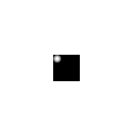 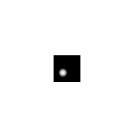 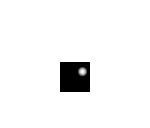 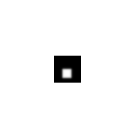 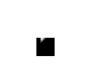 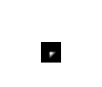 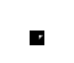
Neural Network Used
The architecture used is a simple, 1-hidden layer net with a cross-entropy loss function, trained with scaled conjugate gradient and backpropagation
view(nets{1});
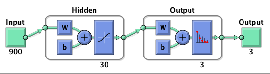 View a Pixel as a Function on Stimulus Space
View a chosen input pixel as a function on stimulus space using a heatmap. We plot one heatmap per object class
pixel = [15 15]; % [x y]
num_shapes = 3;
ViewPixel_FunctionSpace(pixel, shapes, num_shapes)
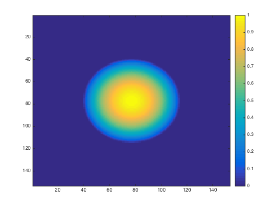 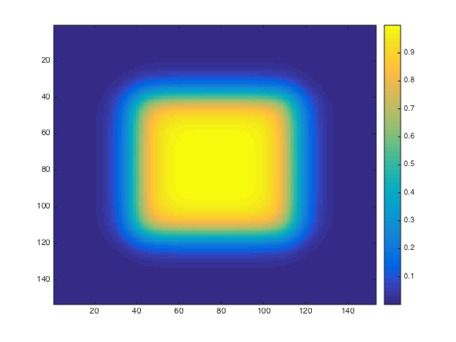 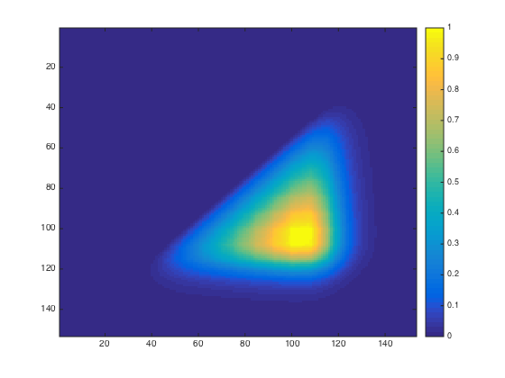 View a Neuron as a Function on Stimulus Space
Here, we choose a neuron in a layer of a net, and for each object class we plot a heatmap representing that neuron as a function on stimulus space
neuron = 15;
net = nets{1};
layer = 1;
shape_names = {'Circle', 'Square', 'Triangle'};
ViewNeuron_FunctionSpace(neuron, net, layer, shapes, shape_names);
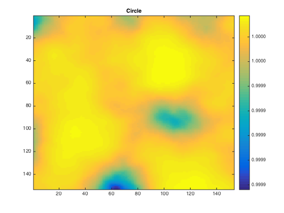 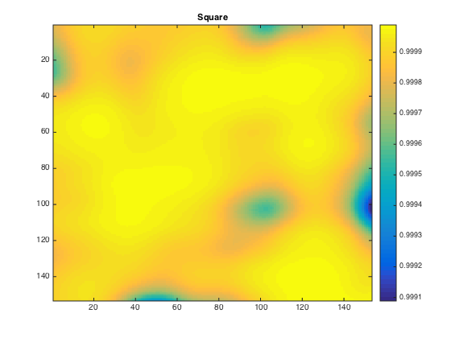 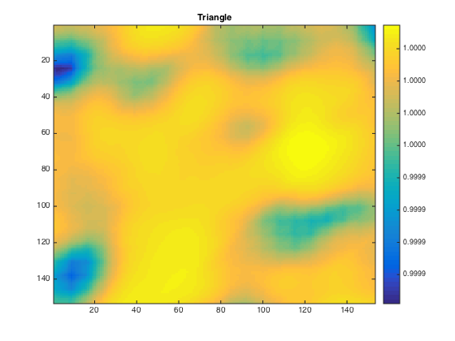 View the Eigenvectors of a Function Cloud of Neurons
We feed-forward pass the stimuli through a net to a given layer, and consider each neuron's output at that layer to be a function over all the stimuli. This defines a function cloud of points and we do PCA on this function cloud, plotting the top K eigenvectors of the cloud
We do this by selecting each object class as stimuli and passing it through the net
layer = 1;
net = nets{1};
K = 2;
num_shapes = size(shapes,2);
Circles
gridshape = [153 153];
stimuli = shapes(:,1:num_shapes/3);
FunctionCloudPCA(net, layer, stimuli, gridshape, K, 'Circles');
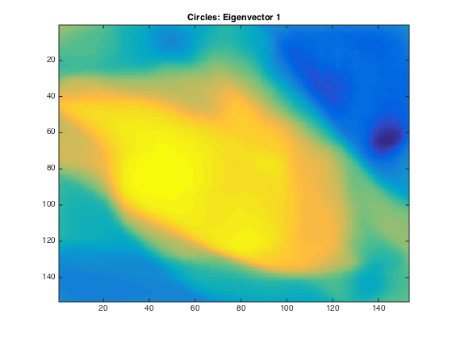 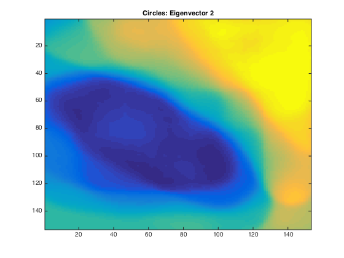 Squares
gridshape = [153 153];
stimuli = shapes(:,num_shapes/3+1:num_shapes*2/3);
FunctionCloudPCA(net, layer, stimuli, gridshape, K, 'Squares');
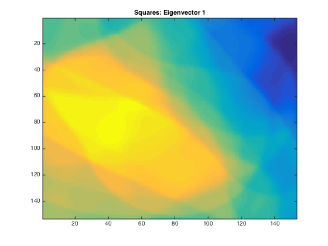 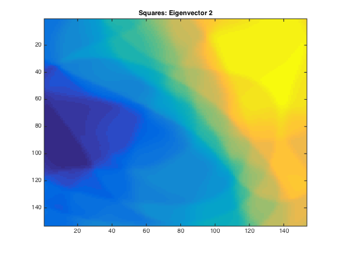 Triangles
gridshape = [153 153];
stimuli = shapes(:,num_shapes*2/3+1:num_shapes);
FunctionCloudPCA(net, layer, stimuli, gridshape, K, 'Triangles');
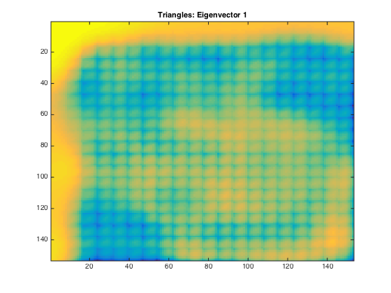 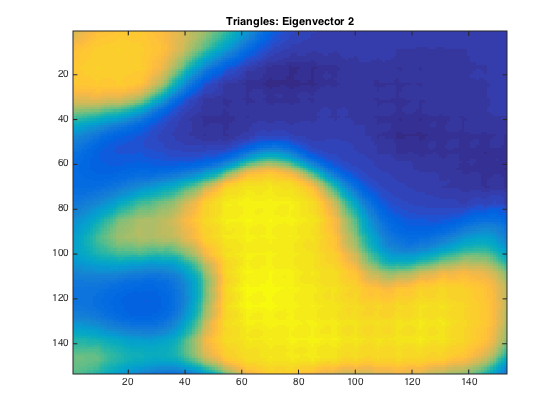